01-综合架构开篇
绘制

绘制

轻松理解网站架构

运维内网维护架构
绘制

绘制
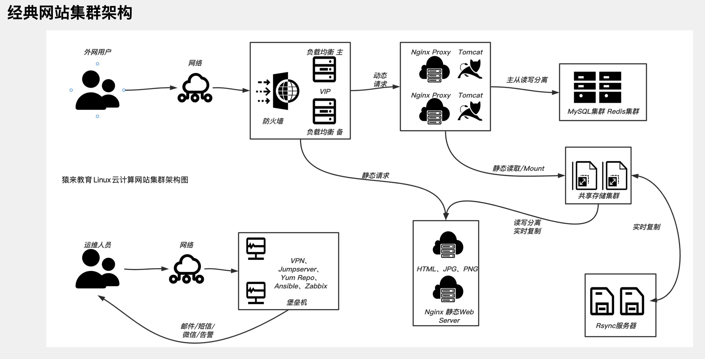
网站上线流程架构
正式开始学习网站架构后，最终目的是确保公司的产品能上线，例如淘宝网开发完毕后，能正确的让老百姓通过访问域名
www.taobao.com
www.yuchaoit.cn
即可正确的看到网站提供的功能服务，这是运维的工作职责。
那么你就得对互联网产品的开发生命周期有足够的认识，也就是这个网站是经过了什么样的流水线，从诞生、到最终上线的。
软件生命周期
软件生命周期又称为软件生存周期或系统开发生命周期，是软件的产生直到报废的生命周期。
整个生命周期包括问题定义与规划、需求分析、系统设计、软件编程、软件测试、软件运维等阶段。
既然我们学习的是运维，要知道，你维护的项目，这个产品，如何诞生的，你又处于哪一个环节。
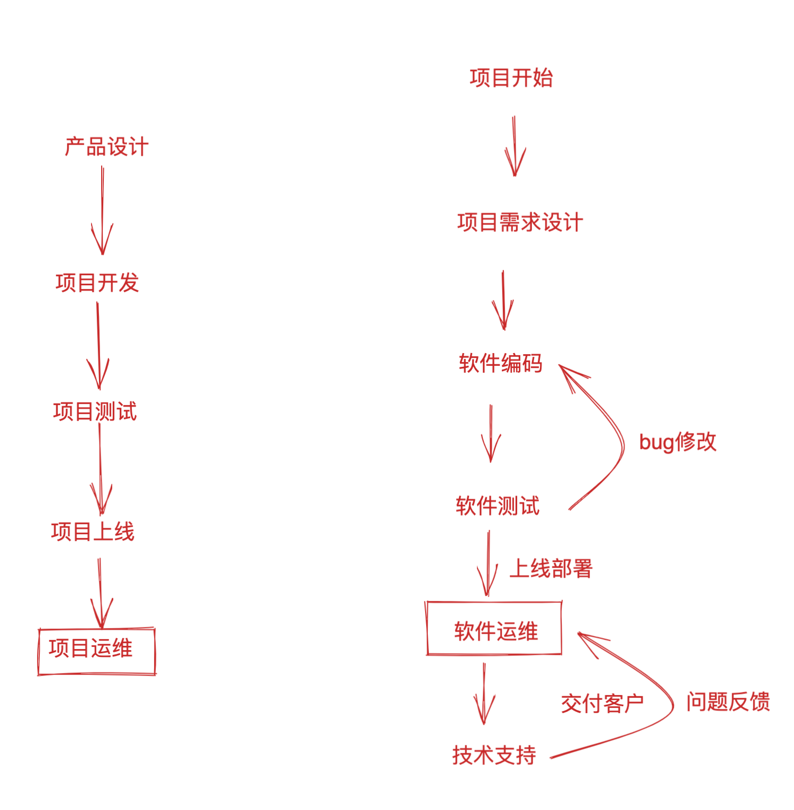
wordpress博客产品分析
以一个经典的网站产品举例，我们来看看，我们学的运维，它在公司里到底是为谁服务的
产品分析
该公司决定开发一款产品，主要以提供网站功能为主
用户使用该产品，特色是可以在任何地方、发布任何内容
这也就是在表述，一个网站的基本功能
而wordpress这个软件，就是一个网站模板，你使用它就可以轻松部署一个网站，包括其中所需要的
产品核心特色
前端功能
前端功能（提供了大量美观的前端模板，主题）
不仅仅是为了美观、而是该网站架构，适用于N种业务
让你无须有自己的设计师，就可以搭建一个属于你的网站，如
咖啡馆官网
花店官网
旅游网
摄影网
交友网
这些业务都只需要更换网站数据，模板都同一套即可，你要做的就是去准备图片、文案等素材，关于你想要维护的网站数据，例如你爱好音乐、摩托等。
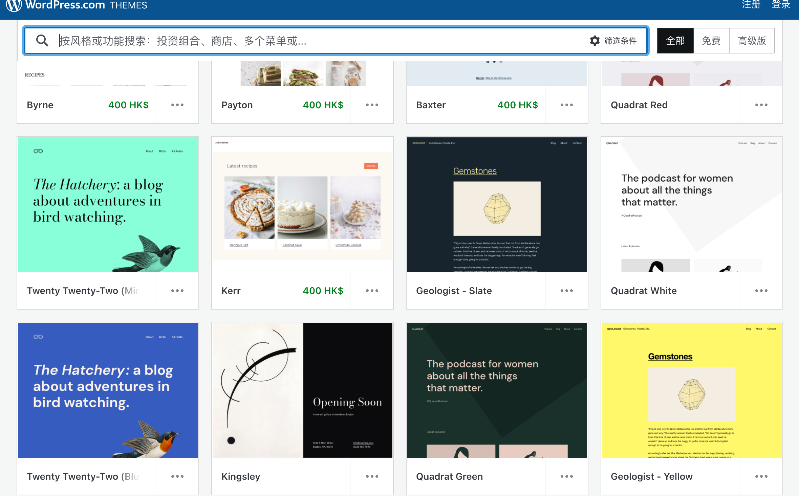
后端功能
后端功能，提供如
- 数据统计，阅读数、点赞数、粉丝数
- 搜索引擎、博客搜索、文章搜索
- 数据存储、提供数据库服务
- 安全性，网站前后端源码高质量，没有常见漏洞，放心使用
- 分享功能，wordpress的文章，可以一键分享到如微信、qq等平台。
- 文本编辑器，在线的编辑文章，支持普通文本、markdown、图片大小裁剪等功能。
运维功能
轻松部署，提供LNMP环境即可搭建、自适应PC端、移动端页面，均可以通过修改前端主题，实现自适应的美观页面。
自己获取源码部署
在该公司的角度看待运维
1.在上述软件需求明确后，根据功能，开发源代码
2.提供软件源码
3.交付给运维部署
4.网站运行后，进行后续的业务配置。
看在我们个人角度，使用该产品
1.下载wordpress源码
2.自己准备好linux机器环境，部署LNMP，可以用于运行该wordpress
3.后续的网站维护，linux后台维护
官网提供了云产品
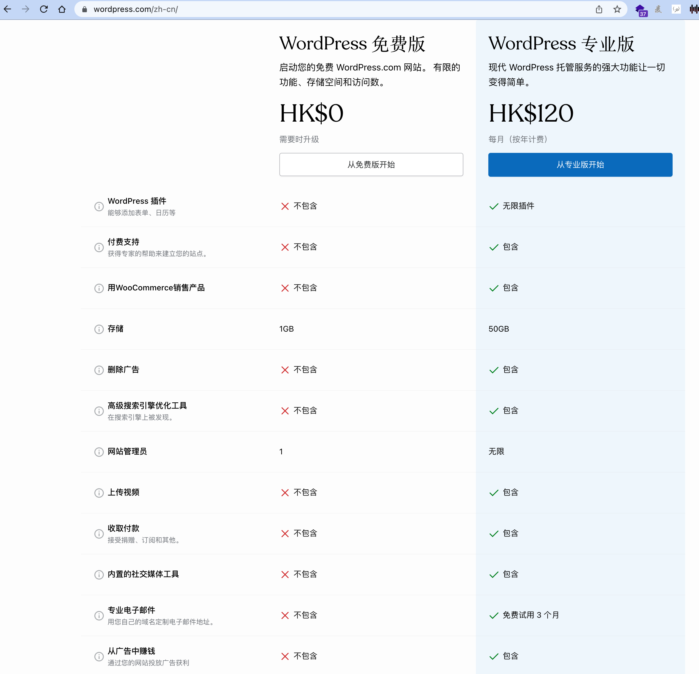
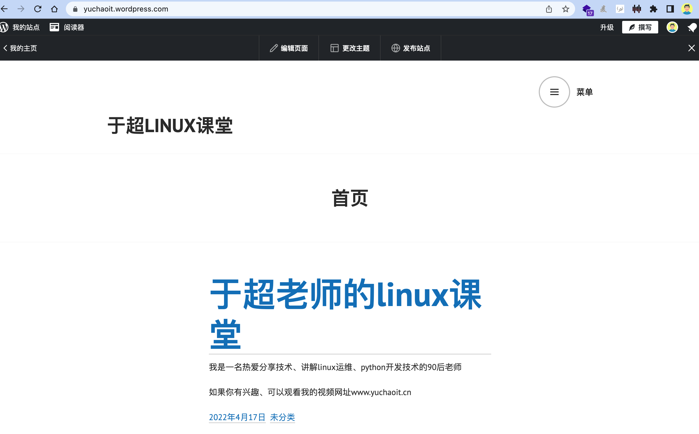
该功能也就是人家官网提供的，针对于非IT，不懂软件技术的人群，也能轻松部署自己的网站，人家提供域名、服务器、云存储等一些列功能，你只需要鼠标点点点，选择好所有的模板，最后付钱就行。
wordpress在全球有N个用户，那这巨大的用户群体，支付的费用，养活自己的IT团队，也就是小菜一碟了。
关于wordpress的官网上线
上线
是指项目发布到服务器，正式给用户提供访问。
如淘宝网源代码以部署到服务器上，此时你可以通过浏览器访问www.taobao.com开始购物了。
生产环境
如网站源码运行在该环境中，正式对互联网的用户提供访问，受到整个运维团队的全力维护。
https://wordpress.com/
关于软件开发完毕后要进行多环境的测试运行，以检查代码可以正确的运行。
- 开发环境
- 根据软件运行要求，部署程序可以运行的最低环境，确保功能性。
- 如在集群、单节点的选择。
- 测试环境
- 根据软件运行要求，部署单节点、多节点的多套测试环境，且完成自动化发布。
- 预生产环境
- 根据软件运行要求，部署单节点、多节点的多套运行环境，实现自动化发布、程序运行监控。
- 生产环境
- 根据软件运行最高要求，部署最高配置的服务器，完成集群部署
- 且完成后续的自动化发布、更新、监控，以及后续技术支持。
图解Dev、QA、staging、prod四大环境
这部分内容，也紧密练习到于超老师要讲解的持续集成、CI/CD篇知识点。
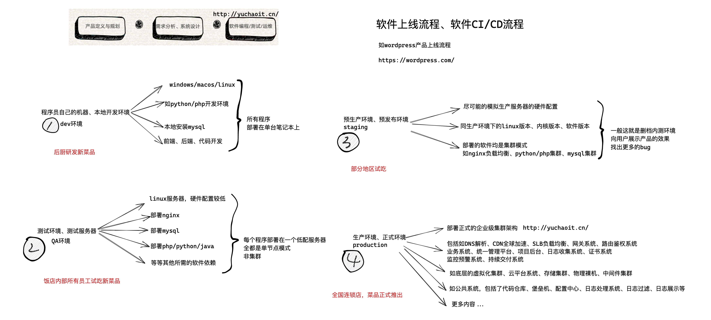
软件应用开发的经典模型有这样几个环境：开发环境(development)、集成环境(integration)、测试环境(testing)、QA验证，模拟环境(staging)、生产环境(production)
development
development【开发环境】是程序的开发环境，一般是个人或者小团队的工作环境，目的是让项目在开发者本地运行，跟其他的团队区分，并且允许开发人员任意修改程序而不用担心会修改其他团队成员的工作。
testing
Test 环境、Staging 环境、Prod 环境，这三个环境，都有其独特的属性。只有通过对其特性的分析，确定测试人员的关注点和侧重点，才能更好地利用它们。
测试环境（Test）
测试环境也叫 Test 环境，这是测试人员进行新功能测试的主要环境，一般由测试人员自己部署、管理和使用。
测试环境特点
测试环境一般会克隆生产环境的配置，如果一个服务在测试环境中无法按预期工作，就视为测试不通过，就不能把它发布到生产环境中。
staging/stage
staging【预发布环境】是用来在项目正式上线之前对应用进行集成、测试和预览，通常，staging环境尽可能地模拟生产环境。
一般在发布一个新版本应用程序之前，新的更新必须要在staging环境下测试，这个环境也可以用来向用户展示应用效果。
预发布环境（Staging 环境，口语表达时经常变成 Stage 环境）是和生产环境最接近的一个测试环境。
预发布环境，从名字中可以看出来，它用来进行正式发布前的预演和验证。
测试环境和生产环境之间存在着某些差异，为了避免这些差异导致的缺陷漏测，预发布环境应运而生。
stage举例，支付功能
举个最常见的例子，一般在 Test 环境，没有办法测试涉及支付相关的业务功能。
虽然可以通过 mock 的方式测试整体的业务流程，但依然不能确保支付功能是可用的。
mock测试数据环境
是指例如模拟用户基于支付宝的扫码支付，测试环境下，使用的都是支付宝的沙箱支付，完全是一个假数据的平台，来测验支付程序是否正常，而不会产生真实的金钱变动；
支付宝提供的账户，余额都是假的，仅仅是是测连续连通性的。
官网地址
https://opendocs.alipay.com/support/01razc
如果此时直接发布到生产环境却发现支付功能不可用，那将是一个业务的灾难级故障。
所以，引入预发布环境可以解决此类问题，这也是它需要高度仿真的缘由。
因此在基础环境、配置方面与生产环境一致，差别主要是性能和数据存储。
- 性能：虽然预发布环境的服务器性能与生产环境性能基本一致，但主要体现在预发布环境的服务器实例数通常只有 1 个或少数几台。
- 不同的公司预发布环境略有差异，比如预发布环境使用的是生产环境的数据库备份，或者预发布环境与生产环境使用同一数据库。
如果预发布环境使用生产环境的数据库备份，则需要进行不定期的数据库同步，保持和生产环境的设置、数据一致性。
stage和prod的区别
预发布环境连接的数据库有所不同
Staging 环境的特点
Staging 环境的特点是高度仿真，它是正式发布前的最后一个环境，数据库同生产环境。对于“数据库同生产环境”这一特点来说，需要特别注意的是，对于同一条用户数据，应避免同时在预发布环境和生产环境对其进行变更。因为数据库缓存存在这两套环境中，可能会产生数据不一致等问题，且难以定位和修复。
可见，预发布环境虽然很接近生产环境，但其区别也同样明显：
- 预发布环境中新功能为最新代码，其他功能代码和生产环境一致；
- 预发布环境和生产环境的访问域名不同；
- 预发布环境一般是研发人员和测试人员使用，而生产环境是提供给真实用户使用的。
生产环境（Prod）
生产环境也叫 Prod 环境，Prod 是单词 Production（生产）的简写，代表正式的对外发布服务的环境，是最终用户使用的环境。
生产环境特点
生产环境有着其独有的特点，在测试过程中应特别留意：
- 真正的用户在使用的环境，不要随意在这个环境中做测试，尤其是可能产生脏数据或可能导致服务停用的测试；
- 生产环境的系统复杂度高、存储的数据量大、服务器实例数多，大量的真实用户会产生多种多样的行为，这些都可能导致不可预期的现象，尤其是在性能或异常场景方面；
生产环境出现问题后，无论是定位还是解决问题都需要权限，通常需要特定的人员来操作，影响工作效率；
线上测试
线上测试有很多成熟的实践，比如业务逻辑灰度、A/B 测试等。
负载均衡
业务逻辑灰度发布是在新发布一项业务功能时，先只开放给一小部分（比如 5%）用户使用，使用一段时间反响较好或未出现缺陷时再逐步开放使用比例，重复这一过程，直到向所有用户开放使用。一般情况下，业务逻辑灰度适用于发布特大功能、重大的架构改造或发布容易引起用户投诉或舆情的功能等情况。
A/B 测试主要用于产品功能或算法策略的对比，版本 A 和版本 B 分别部署在不同的服务器上并开放给不同的用户使用，一般适用于收集用户反馈或行为数据来辅助产品功能设计。比如对比两种营销策略对用户留存的影响、对比两种推荐算法策略的优劣，等等。
- 线上监控
除了上述测试内容外，还需要针对生产环境进行业务和技术监控，对生产环境的数据和日志等进行分析，旨在前置发现质量风险，暴露问题。
生产运维架构图展示
终端数据上报
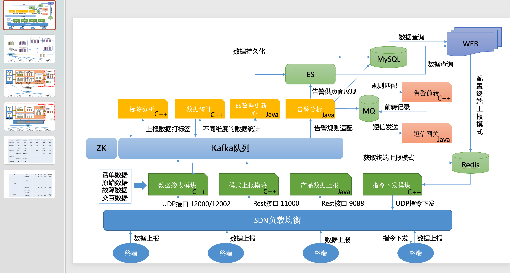
服务器分布、网络规划
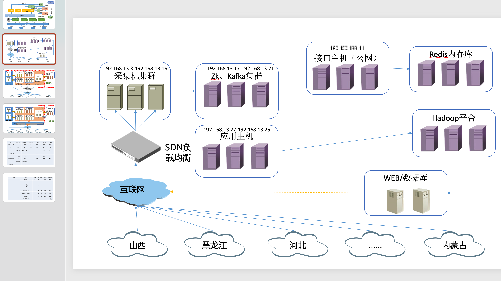
服务器分部署、网络规划
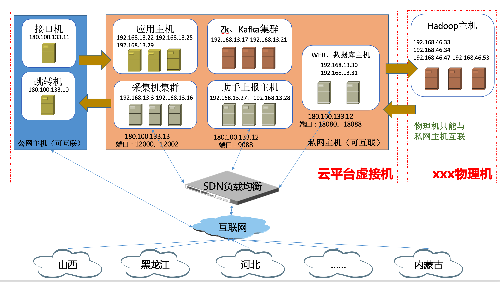
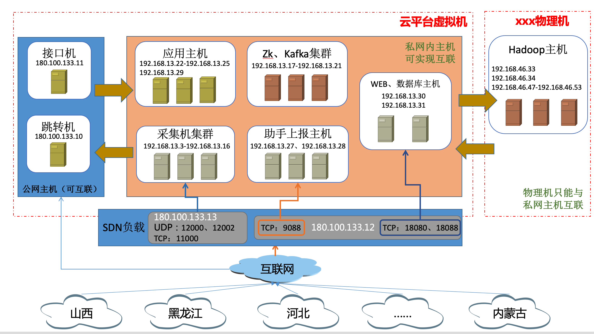
物理机、虚拟机数量规划
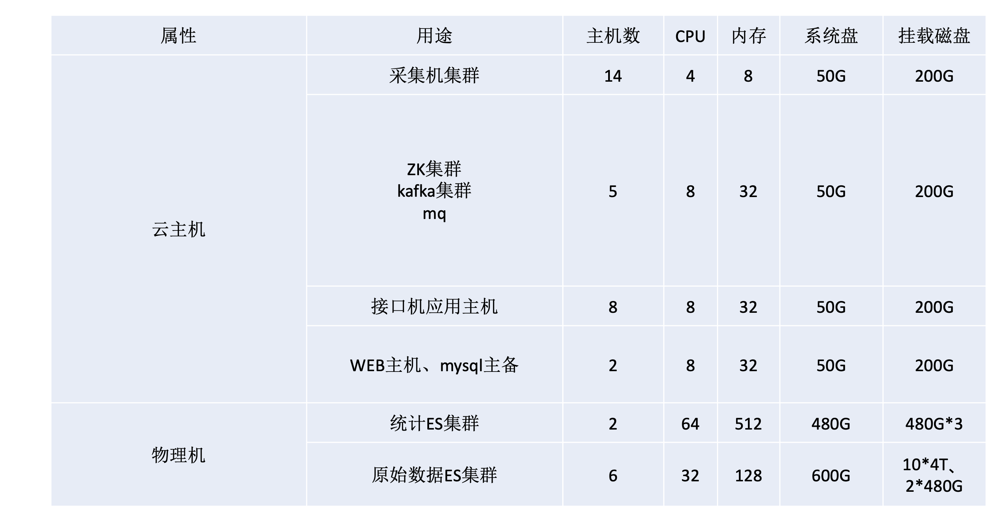
咱们学习期间就属于是test测试环境
- 服务器给的配置较低
- 以学习、测试使用各软件功能为主
- 程序运行后也无用户访问，可以让你的同学当做你的客户端用户，测试网站功能
入职后的首要任务
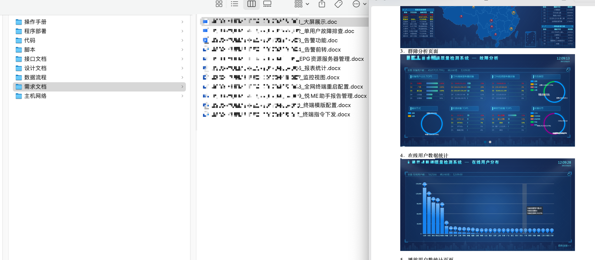
无论是运维、开发、或是测试，入职后接到的第一个任务就是看文档，你需要先熟悉新公司的业务，以及该业务涉及的技术。
- 技术都是相通，类似的，你在前东家用centos7，新公司也一样是centos7；
- 你在前东家用LNMP技术维护零售电商系统，新公司是维护爱奇艺APP系统后台，也一样会用到nginx、mysql、python/php/java的部署，调试
只不过你跳槽后，工资涨了5k，你要学的东西也肯定更多了，也要对得起这多出来的每月5千块
前期看文档，熟悉业务，学新技术会累一点，熬过艰苦的试用期，转正后，业务熟了，技术也会了，后续就是维护、迭代更新，喝喝咖啡摸摸鱼。
- 直到你下次有了跳槽的想法， 比如参加了一次同学聚会，发现，我靠，这小子以前很菜啊，现在挣这么多？回家闷头开始学习、打开于超老师的b站，开始跟超哥学python运维开发。（哈哈，猝不及防的广告）